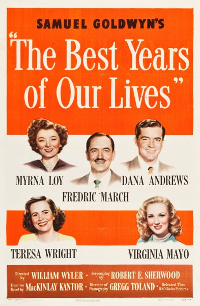

The Best Years of Our Lives

Starring: Myrna Loy, Fredric March, Teresa Wright
Director: William Wyler
Writer: MacKinlay Kantor, Robert E. Sherwood
Producer: Samuel Goldwyn
The Best Years of Our Lives (also known as Glory for Me and Home Again) is a 1946 American epic drama film directed by William Wyler and starring Myrna Loy, Fredric March, Dana Andrews, Teresa Wright, Virginia Mayo and Harold Russell. The film depicts three United States servicemen returning from World War II and re-adjusting to societal changes and civilian life.
Trivia
- Won the Academy Award for Best Picture.
- Won the Academy Award for Best Supporting Actor.
- Won the Academy Award for Best Actor.
- Won the Academy Award for Best Director.
- Won the Academy Award for Best Film Editing.
- Won the Academy Award for Best Writing, Adapted Screenplay.
- Won the Academy Award for Best Original Dramatic or Comedy Score.
- Selected for the National Board of Review: Top Ten Films.
- Won the BAFTA Award for Best Film.
- Also nominated for: Academy Award for Best Sound.
- Samuel Goldwyn was inspired to produce a film about veterans after reading an August 7, 1944, article in Time about the difficulties experienced by men returning to civilian life.
- Goldwyn hired former war correspondent MacKinlay Kantor to write a screenplay.
- Robert E. Sherwood then adapted the novella as a screenplay.
Filming Locations
- The scene of Derry's walking among aircraft ruins was filmed at the Ontario Army Air Field in Ontario, California.
Previous Showings
3 Runs • 1 Festival
All runs on record (3):
- May 1 - 5, 1993
- June 8 - 9, 1995
- August 21 - 24, 2010Summer 2010